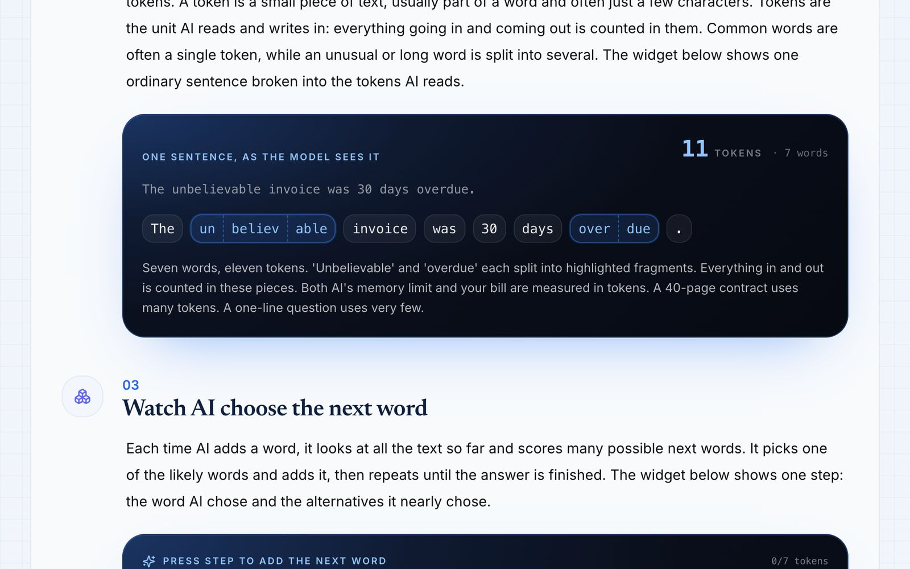
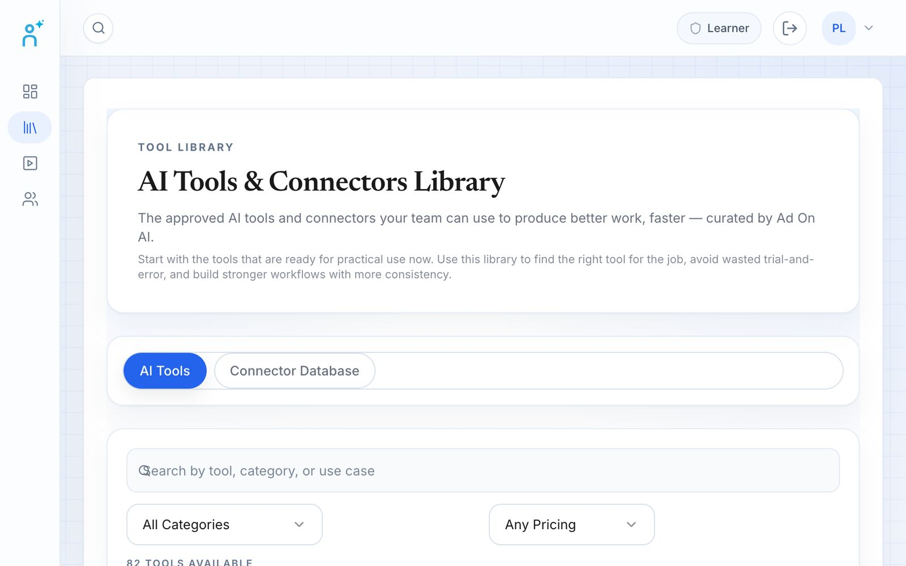
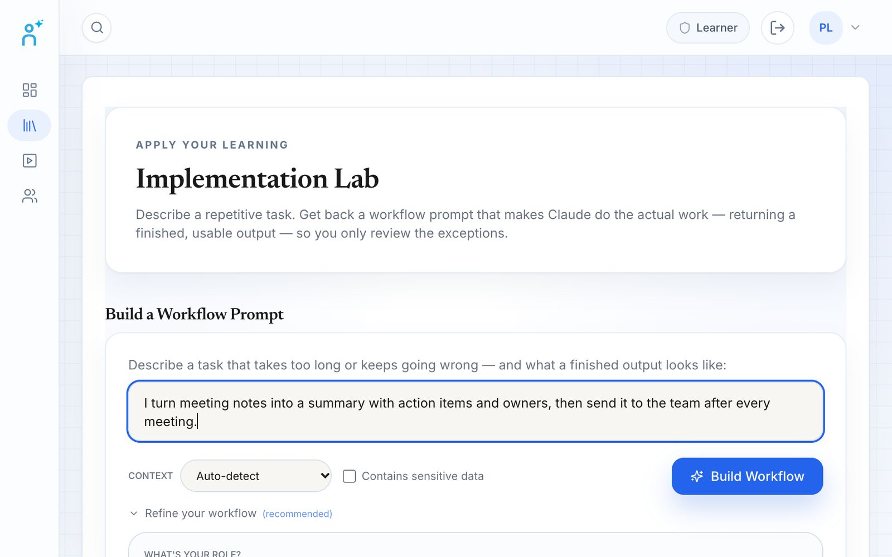
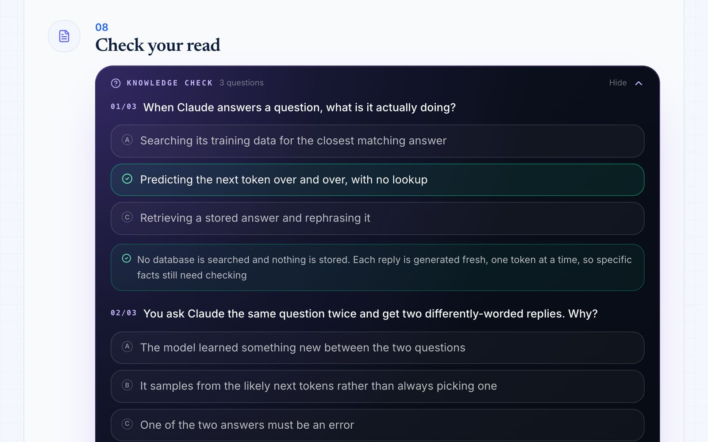
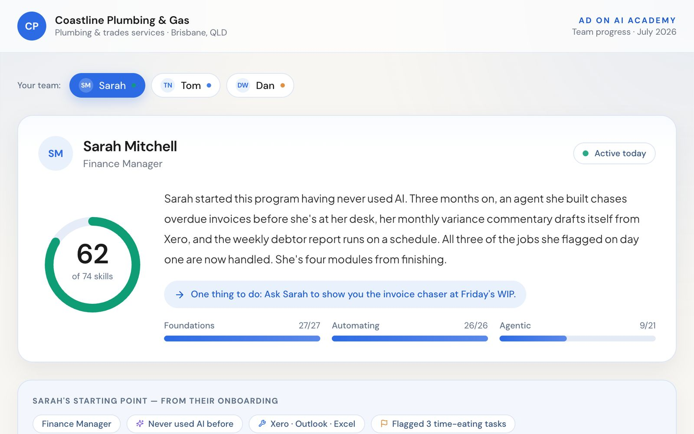
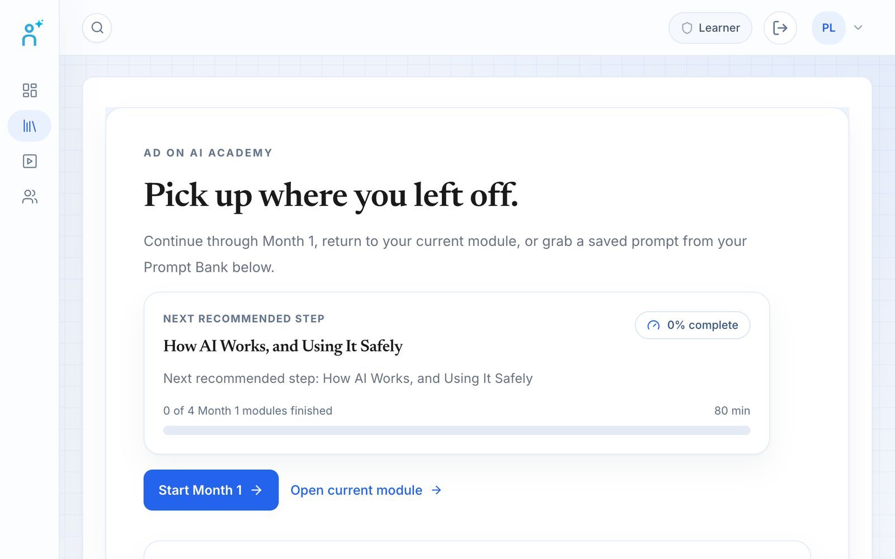

AI enablement, built around your team’s real work.
Our most comprehensive program. 24 self-paced modules, each ending in something real — with a structured track for BPO teams, and ongoing support that keeps skills current as AI moves.






Everything that’s includedShow less+
What is the Ad On AI program?
A self-paced AI enablement program for non-technical staff at Australian small and medium businesses. Across 24 hands-on modules — the essential skills, automation and AI agents — each person finishes with 20+ working AI builds for their own job, with hands-on support from Claude Certified Experts and a monthly progress report for leadership.
- Who it’s for
- Non-technical staff — finance, operations, marketing, admin and customer service. No technical background needed.
- Format
- Online and self-paced. Every module is open from day one.
- Length
- 24 modules, under 24 hours of self-guided learning, with lifetime access to the Learning Academy.
- Outcome
- 20+ working AI builds per learner, plus a record of the hours reclaimed.
- Support
- Hands-on help from Claude Certified Experts, and monthly progress reporting.
- Tools
- Claude is the worked example; the skills carry across to ChatGPT, Copilot, Gemini and Grok.
- Also available
- A structured track for BPO and outsourced teams, and a membership for ongoing support.
Most AI training gets watched once and forgotten.
A one-off course or a folder of videos doesn’t change how anyone works. Ours is ongoing, hands-on, and built around the actual work your people do — so they use AI every day, and you see it in their output before you see it in a report.
Watched once, forgotten by Friday. Generic examples that don’t fit your business, and no one to turn to when it doesn’t work on real tasks.
Ongoing, applied to their real role, with hands-on support and monthly proof of progress — so the skills stick and compound instead of fading.
A managed program, not a video library.
Every month runs on the same rhythm — guided learning, real application, and a clear read on progress.
Three steps to getting AI working for you.
A self-paced program that takes your team from using AI now and then to having it do real work for them, taught on your own tasks. Short, hands-on modules — each one ends with something they can use in their work the same day.
Our modules are updated as AI moves — so we never teach outdated AI.
Trained for the job they actually do.
The same strong foundation, applied to each person’s real responsibilities. Everything they build is for their own role — not a generic demo.
Every staff member finishes with 20+ working AI builds — for their own job.
This isn’t theory they forget by Friday. At a minimum, each person you enrol walks away having personally built and deployed the list opposite — all tied to their real role, plus a documented record of the hours reclaimed and the work now handled automatically.
Structured AI enablement for your people.
A structured program that starts with foundational skills and progresses, month by month, toward advanced use — with monthly knowledge and skills checks, progress reporting, and hands-on implementation support whenever your people need it.
From novice to advanced AI user.
Three foundational months grounded in each person’s real work — then the program continues, tailored to their specific role.
See how each month worksShow less+
How each month works.
Every month runs on the same rhythm — guided learning, real application, a check on what stuck, and a clear read on progress. Then it repeats, building on the last.
Skills your person will gain.
- Understand where AI is useful
- Competent in a range of AI tools
- Get useful results from AI in their daily tasks
- Prompt with more control and consistency
- Apply AI inside their own workflow
- Demonstrate measurable productivity improvement
What your person gets help with.
- Using AI to speed up the tasks they already do every day.
- Getting unstuck when AI isn’t giving them the right results.
- Building AI into their actual role — not just learning about it.
How it works. When your person needs help using AI in their work, we step in directly — real, hands-on support from someone who knows the tools.
The learning doesn’t stop when the program does.
Your membership, added to your training program. Keep your team learning after the course — one-on-one time with our specialists, masterclasses and webinars, and an active community — so their skills only get more valuable as AI moves.
Add it to your program.
Membership is a separate monthly fee on top of the program. It covers your support time and the community, and keeps the momentum going long after the modules end.
See everything in the membershipShow less+
Stay sharp as AI keeps moving.
The tools change every month. These sessions keep your team current — new weekly AI masterclasses, plus a monthly trends webinar with AI Enablement, all in plain English and built around real work.
Help and momentum, every week.
The program gets your team fluent; the community keeps them there — and connects them with like-minded staff from other businesses who are heavy AI users too. It’s where the learning stays current and the wins keep coming after the modules are done.
Live webinars, the 1st of every month
Free, online, and open to your team. Recorded and kept if you can’t make it live.The ideas behind the program, in plain English.
Free guides from our Claude Certified Experts on the skills your team builds in the program. Browse all resources
What people say after the course.
I’ve just finished the Ad On AI training course, and it’s made a big difference in how I work. The techniques covered have cut down a lot of the repetitive, manual work in my day. That’s given me more time to focus on what really moves the needle — talking with clients and thinking through the bigger picture of how to grow their business.
Working with Ad On Group and Claude we were able to build a co work automation to assess our FB and Insta campaigns to see whats working and whats not. We can now cut underperforming social campaigns and focus on the ones working. The AI course plus the support we were able to build something that really makes a difference. Thanks Ad On Group and Claude!!
I’ve been working through the AI training course for a couple of months now and it’s been really helpful! My client is happy with the increased productivity and they enjoy reading through the monthly progress report they receive. Highly recommended!
Frequently asked questions.
The program, the BPO track and ongoing support — how it all works.

How long is the AI Enablement program?
Who is the program designed for?
What will each staff member be able to do by the end?
Is this just a video course?
Does it only work with Claude?
What happens after they finish the modules?
Is there a shorter program?
Who is the BPO AI Program for?
How is the program structured?
What does each month cover?
How is this different from the standard program?
What happens after month three?
What is Ongoing Support?
Is Ongoing Support included in the program?
What's actually included?
Why would my team need it?


Ready to get your team doing more with AI?
Book a call and we’ll map a program to your team and goals — whether that’s AI Enablement, a BPO team, or keeping skills current with a membership.